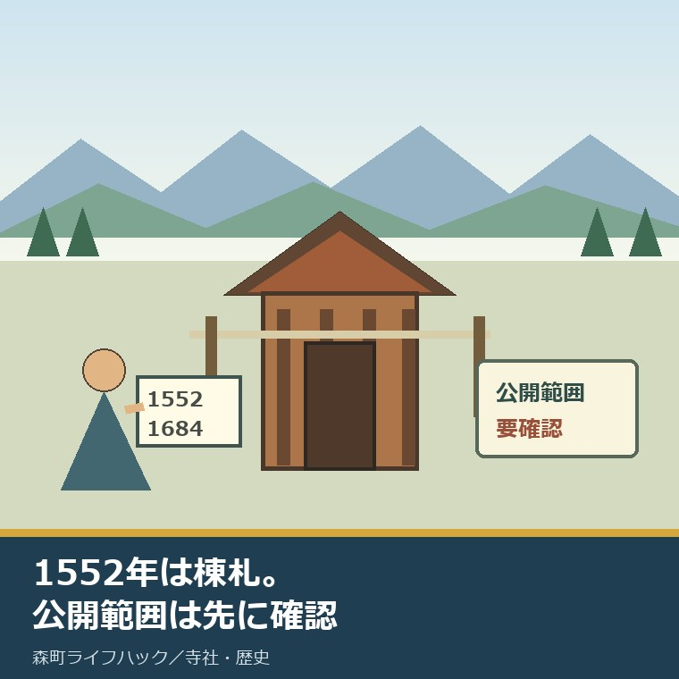
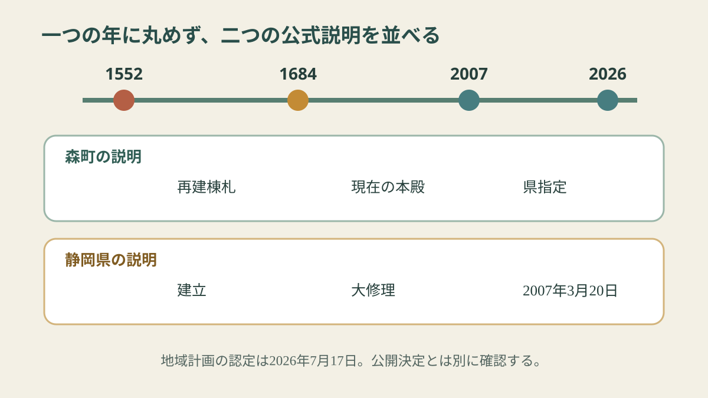
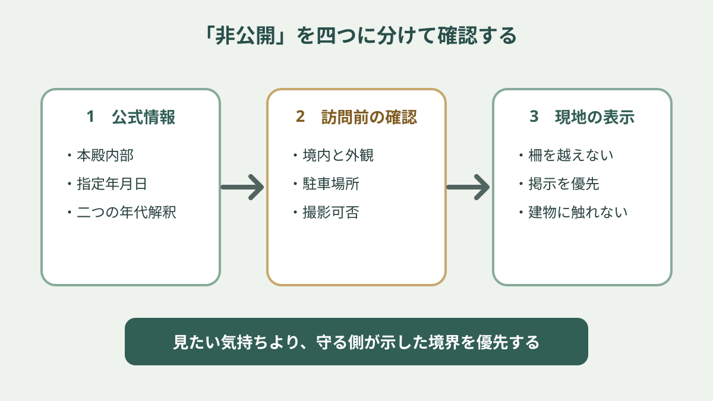

三倉八幡神社本殿｜1552年棟札でも非公開

この記事の結論
Q. 三倉八幡神社本殿は1552年造営で、現地へ行けば内部を見られますか。
A. 1552年は再建を示す棟札の年、森町が説明する現本殿は1684年です。県は1552年建立・1684年大修理と説明しており、公式情報にも解釈差があります。県の公開情報は本殿を「一般公開なし」とするため、内部を見られる前提では出かけません。境内全体の立入禁止とは確認できないので、外観を見られる範囲、駐車、撮影を訪問前に確かめます。
森町三倉の古い社殿を見たいと調べると、「1552年」「1684年」「非公開」という三つの情報に行き当たります。数字だけ拾うと、1552年の建物がそのまま残り、現地では何も見られないようにも読めます。
しかし、森町と静岡県の公式説明は同じではありません。ここを一つの年へ丸めると、この本殿の面白さも、訪問時の注意も消えます。
意外なのは、古さの根拠が一枚岩ではないことです。指定文化財だから年代が一つに確定している、とは限りません。
この記事では、2026年9月9日に確認できた公表情報だけを使い、年代、指定、公開可否、地域計画を分けます。私は建築史の専門家ではないため、二つの公式解釈のどちらが正しいかを独自に判定しません。
対案・結論｜1552年の棟札と1684年の現本殿を分ける
森町の「神社建築」ページは、三倉の八幡神社について、天文21年、1552年の社殿再建を示す棟札があると説明しています。
同じページは、現在の本殿を貞享元年、1684年に建てられたと考え、1552年の建物の部材や意匠が受け継がれた可能性を示しています。
一方、静岡県の文化財情報は、本殿を1552年建立、1684年に屋根を含む大規模な修理が行われた建物として紹介しています。
したがって、本記事の見出しは「1552年造営」ではなく「1552年棟札」としました。検索で見つけやすい年は残し、現本殿の確定造営年とは扱いません。
| 確認先 | 1552年の扱い | 1684年の扱い | 本記事での読み方 |
|---|---|---|---|
| 森町「神社建築」 | 社殿再建を示す棟札 | 現在の本殿を建てたと考える | 棟札の年と現本殿の年を分ける |
| 静岡県文化財情報 | 建立 | 屋根を含む大修理 | 県の解釈として併記する |
| 森町の年表 | 1552年12月15日に八幡神社を再建 | 記載なし | 再建記録の存在を確かめる |

1552年から2026年までは474年、1684年からでも342年あります。どちらの解釈でも、世代をまたいで部材、屋根、記録をつないできた建物である点は変わりません。
ただし、342年という引き算を、そのまま全ての部材の年齢にはできません。修理や交換の履歴を部材ごとに確認していないからです。
古建築を見るとき、建立年だけを当てるより、どの記録が残り、どこが直され、何が引き継がれたかを見る方が、守ってきた時間に近づけます。
家族へ説明するときも、「1552年の本殿」と一行で送らず、「1552年の再建を示す棟札があり、現本殿の年代は公式説明が二つある」と送れば誤解を減らせます。
文化財の紹介板や案内記事には文字数の制約があります。短い説明を見た後で、町と県の元資料へ戻ると、建立、再建、大修理という言葉の違いが見えてきます。
この違いは揚げ足取りではありません。修理を重ねた建物を「一度建てて、そのまま残った物」と誤解しないための、保存の履歴そのものです。
良い点｜県指定は2007年、公開可否も明記されている
静岡県の文化財情報では、三倉八幡神社本殿は県指定有形文化財の建造物で、指定日は2007年3月20日です。
同じ情報欄の一般公開の有無は「無」とされています。少なくとも、本殿内部を自由に拝観できる前提で予定を立てる情報ではありません。
ただし、「一般公開なし」と「境内全体への立入禁止」は同じではありません。県の一項目だけから、参拝、門前からの外観確認、祭礼日の運用まで決めつけることはできません。
森町と県の確認ページには、2026年9月9日時点で、通常日の開門時間、来訪者用駐車場、撮影可否、外から本殿を見られる位置が一式では掲載されていません。
現地の掲示や神社側の判断が優先されます。柵、扉、立入表示があれば越えず、建物や境内設備へ触れません。
非公開には、防犯、信仰上の区切り、部材保護、安全管理など複数の理由が考えられます。ただし、三倉八幡神社本殿がどの理由で非公開かは公表資料で確認できないため、本記事では推測しません。
見られない場所を無理にのぞくことは、文化財を知る行為ではありません。見られる範囲と見られない範囲を守ること自体が、訪問者の役割です。
正直に言えば、古い本殿なら近くで細部を見たい気持ちは私にもあります。それでも、知りたい気持ちを立入の理由にはできません。
県のページに指定日と一般公開の有無が同じ画面で示されているのは、訪問者にとって良い点です。価値の説明だけでなく、見学の限界を出発前に知れます。
また、森町のページが棟札と現本殿を分けているため、県の短い解説だけでは見えない論点を補えます。町と県の情報は、競わせるのではなく重ねて使えます。
注文したい点｜地域計画の認定後も個別情報が要る
森町の文化財保存活用地域計画は、国の文化審議会の答申を経て、2026年7月17日に文化庁長官の認定を受けました。森町の案内ページは2026年8月6日に更新されています。
この計画は、町内の文化財を地域全体で把握し、保存と活用を計画的に進めるための法定計画です。個別の一棟を自動的に公開する許可証ではありません。
認定日が新しくても、本殿の公開日が設定された、修理工事が決まった、見学設備が整った、という個別決定は別に確認する必要があります。
2026年9月9日時点の公式ページからは、三倉八幡神社本殿について、公開日、修理額、補助率、所有者負担額、案内担当を特定できませんでした。
地域計画に期待できる点は、建物だけでなく、棟札、地域の記憶、周辺の道、保存の課題を同じ地図へ置きやすくなることです。
一方で、計画ができても、日々の風雨確認、落ち葉の清掃、鍵の管理、祭礼準備、修理の相談は人が担います。文書の認定日と、現場の手間は別の時計で動きます。
森町文化財保存活用地域計画の認定で何が変わるかでは、認定日と町内全体の課題を分けて整理しています。
本殿を訪ねる人は、「認定されたから見せてほしい」ではなく、「計画上の位置づけと、見学できる範囲を教えてほしい」と聞く方が、答える側の負担を小さくできます。
私が町の案内に注文したいのは、公開を急に増やすことではありません。本殿ごとに「内部非公開」「境内参拝の可否」「外観を見られる位置」「問い合わせ先」を四行で示すことです。
四行なら、案内人を常駐させなくても、訪問者が誤った期待を抱きにくくなります。現地の掲示とウェブの更新日をそろえれば、同じ質問を受ける回数も減らせます。
さらに、修理履歴の公開範囲も決めてほしいと思います。全てを詳しく出せなくても、確認済みの年代、未確定の論点、次の調査予定を分ければ、1552年と1684年の混同を防げます。
訪問前は、名称・公開範囲・移動の3点を確認する
一つ目は名称です。資料によって八幡神社、三倉八幡神社、三倉八幡宮という表記が見られます。地図の地点と文化財名が同じ対象か、公式ページを見ながら確かめます。
二つ目は公開範囲です。「本殿内部は非公開か」「境内へ通常参拝できるか」「外観を見られる場所はあるか」を分けて聞きます。
三つ目は移動です。駐車場所、徒歩経路、道路幅、雨天時の足元を確認します。三倉まで着けても、文化財の近くに来訪者用駐車場があるとは限りません。
電話や問い合わせで伝える一文
「三倉八幡神社本殿の年代を調べています。一般公開なしとの県情報を確認しました。通常日に境内から外観を見られる範囲、駐車場所、撮影可否を教えてください」

訪問日と回答者名、回答内容は、スマートフォンのメモへ一行残します。別の日に家族が訪ねるとき、同じ問い合わせを重ねずに済みます。
現地で案内が変わっていたら、その場の掲示を優先します。古いウェブ情報を根拠に立入を求めません。
建物の細部を知りたい場合は、望遠撮影を無断で続けるより、森町の文化財担当に図録、調査報告、公開写真の有無を聞く方が確実です。
森町の神社を建物の年代から見る記事では、町内の社殿を傷めずに読む入口を紹介しています。
大石の視点｜非公開を「もったいない」だけで片づけない
まず認めたいのは、474年または342年という時間をつないだ地域側の仕事です。屋根、木部、境内、祭礼、記録は、見学者が来る日だけ整うものではありません。
文化財に価値があると言うのは簡単です。掃除する担い手、点検する人、修理を相談する人、費用を出す人、鍵を預かる人がいて、初めて残ります。
非公開を「もったいない」とだけ言うのは、鍵と掃除と修理費を持つ人に、公開の手間まで押しつける言い方です。
公開を増やしてほしいと望むなら、受付、保険、安全確認、駐車誘導、撮影ルール、閉門後の確認を誰が担うかまで一緒に問う必要があります。
三倉の人口や氏子数から本殿の担い手不足を直接示す公表値は、今回確認できませんでした。分からない人数を埋めて危機を演出しません。
それでも、森町が地域計画をつくり、保存と活用を町全体の課題として整理したことには意味があります。所有者だけへ背負わせない話の入口になるからです。
打開が要る具体名詞は、担い手、修理費、点検記録、案内役、駐車です。公開回数という数字だけ増やしても、この五つが空欄なら続きません。
しずおか遺産「秋葉信仰と街道」と森町の案内役では、三倉のまちなみと八幡宮が紹介される一方、案内を誰が担うかを考えています。
見学者が一回増えると、問い合わせ一件、車一台、境内での安全確認一回が増える可能性があります。小さな増加でも、同じ人だけが毎回受ければ負担は積み上がります。
反対に、訪問者が公式情報を読み、質問を三点に絞り、決められた場所から見るなら、文化財への関心は保存を支える声になり得ます。
私は、公開か非公開かの二択より、誰が、いつ、どこまでなら無理なく案内できるかを記録する方が先だと考えます。その記録がなければ、担当が替わるたびに判断を最初からやり直します。
今日できる小さな一歩
今日できることは、森町「神社建築」と静岡県文化財情報の二つを同じメモに保存することです。
メモの一行目に「1552年＝棟札・再建記録、1684年＝森町が考える現本殿」と書き、二行目に「県は1552年建立・1684年大修理」と書きます。
三行目に「一般公開なし。境内、外観、駐車、撮影は要確認」と書けば、現地で年代と公開範囲を混同しにくくなります。
訪問を急がなくても構いません。まず二つの公式説明を並べるだけで、見たい気持ちと、守る側への配慮を同じ紙に置けます。
まとめ
三倉八幡神社本殿には、1552年の再建棟札と、1684年をめぐる二つの公式解釈があります。1552年を現本殿の確定造営年とは書きません。
本殿は2007年3月20日指定の県指定有形文化財で、県情報では一般公開なしです。境内全体の立入可否、外観、駐車、撮影は個別に確かめます。
2026年7月17日の地域計画認定は保存と活用の土台ですが、公開決定ではありません。今日、二つの公式ページと三つの確認事項を一枚へ残します。
よくある質問
Q1. 三倉八幡神社本殿は1552年に造営された建物ですか。
A1. 森町は1552年の社殿再建を示す棟札が残る一方、現在の本殿は1684年に建てられ、1552年の部材や意匠を受け継いだ可能性があると説明しています。静岡県の文化財情報は1552年建立、1684年大修理と説明します。公式情報にも解釈差があるため、1552年を現本殿の確定造営年とは言い切りません。
Q2. 三倉八幡神社本殿は見学できますか。
A2. 静岡県の文化財情報は本殿を一般公開なしとしています。ただし、その記載だけで境内全体が立入禁止とは判断できません。外から見られる範囲、立入、駐車、撮影、祭礼日の扱いは、訪問前に神社側または森町の文化財担当へ確認してください。
Q3. 2026年7月17日の地域計画認定で本殿は公開されますか。
A3. 認定だけで公開が決まったとは確認できません。地域計画は森町の文化財を把握し、保存と活用を進める法定の計画です。本殿の公開日、修理、案内整備、費用負担が個別に決定したという公表情報は、2026年9月9日時点で確認できません。
年代解釈、指定状況、公開範囲、駐車、撮影、祭礼日の運用は変わる場合があります。訪問前に神社側、森町の文化財担当、静岡県の最新情報を確認してください。
参考にした公式情報
- 神社建築／静岡県森町（1552年の棟札、1684年の現本殿という説明を2026年9月9日に確認）
- 森町の歴史年表／静岡県森町（1552年12月15日の八幡神社再建記録を2026年9月9日に確認）
- 森町文化財保存活用地域計画／静岡県森町（2026年7月17日の認定と2026年8月6日のページ更新を2026年9月9日に確認）
- 三倉八幡神社本殿／静岡県（県指定日、1552年建立・1684年大修理という説明、一般公開なしを2026年9月9日に確認）

磐田市で小さな不動産業を営みながら、森町の空き家・農地・実家じまいのご相談を受けています。地域と不動産実務をつなぐ目線で、確認の順番まで具体的に書きます。
最終確認日：2026-09-09 ／ 本記事は公表情報と執筆者の見解を分けています。1552年と1684年の解釈差は両方を併記し、境内、外観、駐車、撮影の通常運用は確認できていないため、訪問前の確認事項として記載しました。